Kapitel 3 Stichprobentests
3.1 Nominalskalierte Größen
Chi-Quadrat-Test Der Chi-Quadrat-Test ist einer der grundlegenden statistischen Tests zum Vergleich von nominalskalierten Kategorien, z.B.
- biologisches Geschlecht: Frauen vs. Männer,
- Größe: klein vs. groß
- Texte: Text A vs. Text B vs. Text C …
3.1.1 Lange und kurze Kommentare
Die Verwendung des Chi-Quadrat-Tests wollen wir zunächst am Beispiel eines erfundenen Datensatzes kennen lernen.
| neugeschriebener_satz | kurzer_kommentar_a | ausf_a_lhrlicher_kommentar |
|---|---|---|
| inkorrekt | 13 | 29 |
| korrekt | 67 | 55 |
Im Datensatz wird zwischen langen und kurzen Kommentaren einer Lehrerin unterschieden und die jeweilige Anzahl sprachlicher Fehler von Schülern in ihren Aufsätzen. Geklärt werden soll die Frage, welche Wirkung lange und kurze Kommentare der Lehrerin auf die Anzahl der sprachlichen Fehler hatten.
3.1.1.1 Programme
library(tidyverse)
library(janitor)
library(scales)
library(rmarkdown)
library(kableExtra)3.1.1.2 Kurzversion:
Wie sinnvoll sind lange bzw. kurze Kommentare einer Lehrerin zu sprachlichen Fehlern in Essays?
library(tidyverse)
library(janitor)
# Datei laden und die Variablennamen vereinheitlichen
kommentare = read.delim("data/chisq_kommentare.txt", sep = "\t") %>%
clean_names()
head(kommentare)## neugeschriebener_satz kurzer_kommentar_a ausf_a_lhrlicher_kommentar
## 1 inkorrekt 13 29
## 2 korrekt 67 55library(janitor)
# Chi-Quadrat-Test
chisq.test(kommentare[,-1])##
## Pearson's Chi-squared test with Yates' continuity correction
##
## data: kommentare[, -1]
## X-squared = 6.2551, df = 1, p-value = 0.01238Ergebnis: Wir verwerfen die Hypothese H0 und nehmen die Hypothese H1 an: zwischen kurzen und langen Kommentaren besteht ein nicht zufälliger Unterschied.
3.1.1.3 Längere Version
3.1.1.3.1 Datei laden
Eine Lehrerin möchte wissen, ob es effektiver ist, wenn sie am Rand der Schüleressays kurze oder ausführlichere Kommentare zu den Fehlern der Schüler_innen notiert. Sie vergleicht somit zwei Schülergruppen (Schüler_innen mit kurzen vs. langen Kommentaren) und zwei Beurteilungskategorien (korrekte vs. inkorrekte Äußerungen in den Essays).
library(tidyverse)
# von github laden
kommentare = read.delim(
"https://raw.githubusercontent.com/tpetric7/tpetric7.github.io/main/data/chisq_kommentare.txt",
sep = "\t", fileEncoding = "UTF-8")
library(janitor)
# Variablennamen konsequent schreiben
kommentare = kommentare %>%
clean_names()
# Von der Festplatte laden
kommentare = read.delim("data/chisq_kommentare.txt", sep = "\t", fileEncoding = "UTF-8") %>%
clean_names()
head(kommentare) %>% knitr::kable()| neugeschriebener_satz | kurzer_kommentar | ausfuhrlicher_kommentar |
|---|---|---|
| inkorrekt | 13 | 29 |
| korrekt | 67 | 55 |
3.1.1.3.2 Chi-Quadrat-Test
Stichproben: kurzer Kommentar vs. langer Kommentar
- H0: Zwischen den beiden Stichproben besteht kein signifikanter Unterschied (Unterschiede zufällig).
- H1: Zwischen den beiden Stichproben besteht ein signifikanter Unterschied (Unterschiede nicht zufällig).
library(janitor)
chisq.test(kommentare[,-1])##
## Pearson's Chi-squared test with Yates' continuity correction
##
## data: kommentare[, -1]
## X-squared = 6.2551, df = 1, p-value = 0.01238Wir verwerfen H0 und nehmen H1 an: zwischen kurzen und langen Kommentaren besteht ein nicht zufälliger Unterschied.
3.1.1.3.3 Graphische Darstellung
library(tidyverse)
library(scales)
kom_lang = kommentare %>%
as_tibble() %>%
pivot_longer(kurzer_kommentar:ausfuhrlicher_kommentar,
names_to = "Kommentar",
values_to = "Fehler") %>%
mutate(pct = Fehler/sum(Fehler))
kom_lang %>% knitr::kable()| neugeschriebener_satz | Kommentar | Fehler | pct |
|---|---|---|---|
| inkorrekt | kurzer_kommentar | 13 | 0.0792683 |
| inkorrekt | ausfuhrlicher_kommentar | 29 | 0.1768293 |
| korrekt | kurzer_kommentar | 67 | 0.4085366 |
| korrekt | ausfuhrlicher_kommentar | 55 | 0.3353659 |
kom_lang %>% ggplot(aes(Kommentar, pct, fill = neugeschriebener_satz)) +
geom_col(position = "dodge") +
scale_y_continuous(labels = percent_format()) +
labs(x = "Neugeschriebener Satz", y = "",
title = "Wirksamkeit kurzer und langer Kommentare")
3.1.2 Plural von Kunstwörtern
3.1.2.1 Naložimo programe
library(tidyverse)## -- Attaching packages --------------------------------------- tidyverse 1.3.1 --## v ggplot2 3.3.5 v purrr 0.3.4
## v tibble 3.1.3 v dplyr 1.0.7
## v tidyr 1.1.3 v stringr 1.4.0
## v readr 2.0.1 v forcats 0.5.1## Warning: package 'readr' was built under R version 4.1.1## -- Conflicts ------------------------------------------ tidyverse_conflicts() --
## x dplyr::filter() masks stats::filter()
## x dplyr::lag() masks stats::lag()library(scales)##
## Attaching package: 'scales'## The following object is masked from 'package:purrr':
##
## discard## The following object is masked from 'package:readr':
##
## col_factorlibrary(kableExtra)##
## Attaching package: 'kableExtra'## The following object is masked from 'package:dplyr':
##
## group_rows3.1.2.2 Preberemo podatkovni niz z diska
# Branje datoteke je možno na več načinov
plural_subj1 = read.csv("data/plural_Subj_sum.csv", sep = ";")
plural_subj1 = read.csv2("data/plural_Subj_sum.csv")
plural_subj1 = read_csv2("data/plural_Subj_sum.csv")## i Using "','" as decimal and "'.'" as grouping mark. Use `read_delim()` for more control.## Rows: 738 Columns: 9## -- Column specification --------------------------------------------------------
## Delimiter: ";"
## chr (2): WordType, Genus
## dbl (7): SubjID, Sigstark, En, E, Er, S, Z##
## i Use `spec()` to retrieve the full column specification for this data.
## i Specify the column types or set `show_col_types = FALSE` to quiet this message.# Pokaži prvih šest vrstic
head(plural_subj1) %>% knitr::kable()| SubjID | WordType | Genus | Sigstark | En | E | Er | S | Z |
|---|---|---|---|---|---|---|---|---|
| 1 | NoRhyme | Fem | 4.983333 | 8 | 4 | 0 | 0 | 0 |
| 1 | NoRhyme | Masc | 4.600000 | 6 | 6 | 0 | 0 | 0 |
| 1 | NoRhyme | Neut | 5.366667 | 10 | 2 | 0 | 0 | 0 |
| 1 | Rhyme | Fem | 3.836667 | 3 | 8 | 0 | 0 | 1 |
| 1 | Rhyme | Masc | 4.153333 | 5 | 5 | 1 | 0 | 1 |
| 1 | Rhyme | Neut | 3.784167 | 3 | 7 | 1 | 0 | 1 |
3.1.2.3 Povzetek in Hi-kvadrat test
Podatkovni niz preoblikujemo in povzemamo (agregacija). Za preizkus ustvarimo tabelo 2 x 2 z opazovanimi pogostnostmi (frekvencami). Program izračuna pričakovane pogstnosti in zatem še ocenjuje, ali je razlika med vzorcema statistično značilna.
H0: Preizkusne osebe uporabljajo množinske pripone ne glede na besedni tip (Rhyme / Non-Rhyme). H1: Preizkusne osebe uporabljajo množinske pripone z ozirom na besedni tip (Rhyme / Non-Rhyme).
Če je p-vrednost < 0,05 (tj. 5%), potem obvelja H1: razlika med opazovanimi in pričakovanimi pogostnostmi je statistično značilna (tj. da ni naključna in dovolj velika ob upoštevanju napake).
Če p > 0,05, potem obdržimo H0: razlika med opazovanimi pogostnostmi je naključna.
# Povzemamo ("aggregate")
# Ergebnisse summieren
p = plural_subj1 %>%
group_by(WordType) %>%
summarise(Sigstark = mean(Sigstark),
En = sum(En), E = sum(E), Er = sum(Er), S = sum(S), Z = sum(Z))
# izpis tabele
knitr::kable(p)| WordType | Sigstark | En | E | Er | S | Z |
|---|---|---|---|---|---|---|
| NoRhyme | 4.087337 | 1528 | 2169 | 302 | 307 | 26 |
| Rhyme | 3.916109 | 1425 | 2172 | 561 | 244 | 14 |
# Izberemo tri stolpce
q = p %>% select(WordType, E, S)
# Razlika med deleži množinskih pripon E in S (npr. Bal-e oder Bal-s)
chisq.test(q[,-1]) # prvi stolpec naj se ne upošteva, zato [, -1]##
## Pearson's Chi-squared test with Yates' continuity correction
##
## data: q[, -1]
## X-squared = 6.2424, df = 1, p-value = 0.012473.1.2.4 Naslednji preizkus(i)
# Izberemo tri stolpce za naslednji preizkus
q = p %>% select(WordType, E, Er)
# Razlika med deleži množinskih pripon E in Er (npr. Bal-e oder Bal-er)
chisq.test(q[,-1]) # prvi stolpec naj se ne upošteva, zato [, -1]##
## Pearson's Chi-squared test with Yates' continuity correction
##
## data: q[, -1]
## X-squared = 64.106, df = 1, p-value = 1.179e-153.1.2.5 Tabela 2 x 3
Možno je tudi testiranje treh ali več vzorcev, vendar nam test ne pove, kateri vzorec je različen od drugega.
# Izberemo tri stolpce za naslednji preizkus
q = p %>% select(WordType, Er, E, S)
# Razlika med deleži množinskih pripon E in Er (npr. Bal-e oder Bal-er)
chisq.test(q[,-1]) # prvi stolpec naj se ne upošteva, zato [, -1]##
## Pearson's Chi-squared test
##
## data: q[, -1]
## X-squared = 78.148, df = 2, p-value < 2.2e-163.1.2.6 Zweite Version
Ergebnisse summieren:
(p = plural_subj1 %>%
group_by(WordType) %>%
summarise(En = sum(En), E = sum (E))
)## # A tibble: 2 x 3
## WordType En E
## <chr> <dbl> <dbl>
## 1 NoRhyme 1528 2169
## 2 Rhyme 1425 2172Chi-Quadrat-Test Falls p < 0,05: es gilt H1 (Stichproben unterscheiden sich). Falls p > 0,05: es gilt H0 (kein Unterschied zwischen Stichproben).
(chi = chisq.test(p[,-1])
)##
## Pearson's Chi-squared test with Yates' continuity correction
##
## data: p[, -1]
## X-squared = 2.1535, df = 1, p-value = 0.1422Beobachtete vs. erwartete Werte:
tabelle <- as_tibble(cbind(chi$observed, chi$expected)) %>%
mutate(Wordtyp = unlist(p[,1])) %>% # Spalte wieder hinzufügen
mutate(Wordtyp = str_replace(Wordtyp, "NoRhyme", "Nicht-Reimwort"), # auf deutsch
Wordtyp = str_replace(Wordtyp, "Rhyme", "Reimwort")) %>% # auf deutsch
rename(En_erwartet = V3, E_erwartet = V4) %>% # erwartete Werte, wenn H0 richtig ist
select(Wordtyp, En, E, En_erwartet, E_erwartet) # Reihenfolge der Variablen verändern## Warning: The `x` argument of `as_tibble.matrix()` must have unique column names if `.name_repair` is omitted as of tibble 2.0.0.
## Using compatibility `.name_repair`.tabelle %>% rmarkdown::paged_table()3.1.3 Modalkonstruktionen (morati vs. treba)
3.1.3.1 Packages
library(tidyverse)
library(scales)
library(janitor)
library(readxl)3.1.3.2 Datei laden
Gigafida: Gebrauchsfrequenzen (Tokenfrequenzen) der Modalkonstruktionen - “morati + Infinitiv” und - “biti + treba + Infinitive.”
naklonska <- read_xlsx("data/morati_treba.xlsx") %>% clean_names()
naklonska## # A tibble: 2 x 3
## vrsta_besedila treba morati
## <chr> <dbl> <dbl>
## 1 Časniki 550572 1501540
## 2 Drugo 169349 530345Die zweite Tabelle zeigt die Distribution der beiden Modalkonstruktionen in fünf Funktionalstilen.
naklonska2 <- read_xlsx("data/morati_treba.xlsx", sheet = "List2") %>% clean_names()
naklonska2## # A tibble: 5 x 3
## vrsta_besedila treba morati
## <chr> <dbl> <dbl>
## 1 Časopisi 389479 1086280
## 2 Revije 161093 415260
## 3 Internet 124996 376433
## 4 Stvarna besedila 30998 98981
## 5 Leposlovje 13355 54931Die Modalkonstruktion “morati + Infinitiv” wird ca. dreimal so häufig verwendet wie “biti + treba + Infinitiv.”
3.1.3.3 Graphische Darstellung
Die graphischen Darstellungen zeigen eher geringe Distributionsunterschiede.
naklonska %>%
pivot_longer(treba:morati, names_to = "konstruktion", values_to = "freq") %>%
ggplot(aes(konstruktion, freq, fill = vrsta_besedila)) +
geom_col(position = "fill") +
scale_y_continuous(labels = percent_format()) +
labs(x = "Modalkonstruktion", y = "Gebrauchsfrequenz", fill = "Vrsta besedila")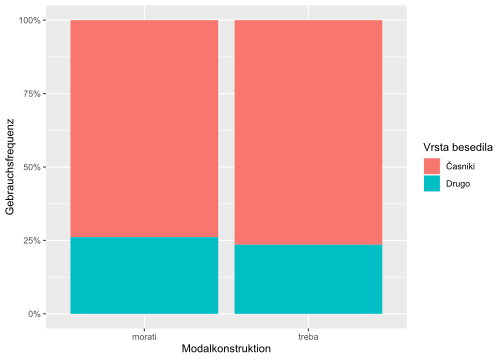
Die Modalkonstruktion “morati + Infinitiv” scheint in den alltagssprachlich näherstehenden Funktionalstilen Belletristik (leposlovje), Internet und Sachtexten (stvarna besedila) etwas häufiger belegt zu sein als die Modalkonstruktion “biti + treba + Infinitiv,” dafür aber in Zeitungen (Časopisi) etwas seltener.
naklonska2 %>%
pivot_longer(treba:morati, names_to = "konstruktion", values_to = "freq") %>%
ggplot(aes(konstruktion, freq, fill = vrsta_besedila)) +
geom_col(position = "fill") +
scale_y_continuous(labels = percent_format()) +
labs(x = "Modalkonstruktion", y = "Gebrauchsfrequenz", fill = "Vrsta besedila")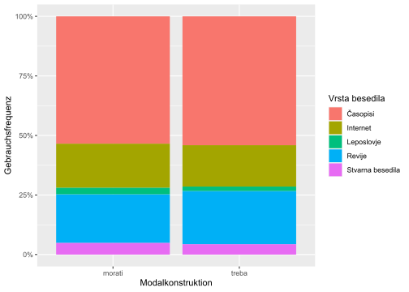
3.1.3.4 Chi-Quadrat-Test
Annahme: Die Modalkonstruktion “morati + Infinitiv” ist weniger markiert als die Modalkonstruktion “biti + treba + Infinitiv.” Formael und semantische Begründungen: … H0: Die beiden Modalkonstruktionen kommen in denselben Funktionalstilen vor. H1: Die beiden Modalkonstruktionen kommen nicht in denselben Funktionalstilen vor.
Der erste Chi-Quadrat-Test zeigt, dass die beiden Stichproben (morati vs. treba) unabhängig voneinander sind (p < 0,001). Damit können wir die Nullhypothese (H0) verwerfen und die alternative Hypothese (H1) akzeptieren. Die beiden Modalkonstruktionen kommen demnach nicht im gleichen Maße in denselben Funktionalstilen vor.
chisq.test(naklonska[ , -1])##
## Pearson's Chi-squared test with Yates' continuity correction
##
## data: naklonska[, -1]
## X-squared = 1862.9, df = 1, p-value < 2.2e-16Der zweite Chi-Quadrat bestätigt Hypothese H1. Die Distribution der beiden Modalkonstruktionen unterscheidet sich. Die graphische Darstellung deutet an, dass dies vor allem am vergleichsweise selteneren Gebrauch der Modalkonstruktion “morati + Infinitiv” in publizistischen Texten liegen könnte. Nach unser Annahme wird die Modalkonstruktion “biti + treba + Infinitiv” häufiger in Texten mit dem Merkmal [+Distanz] eingesetzt.
chisq.test(naklonska2[ , -1])##
## Pearson's Chi-squared test
##
## data: naklonska2[, -1]
## X-squared = 3292, df = 4, p-value < 2.2e-163.2 Intervallskalierte Größen
Statistische Tests: t-Test, lineare Regression, lineare Regression mit gemischten Effekten.
3.2.1 Wirkung von Unterrichtsmethoden
Welche Wirkung haben zwei verschiedene Unterrichtsmethoden auf die Ergebnisse von Sprachtests? Welche Gruppe von Studierenden erreichte eine höhere Punktzahl beim Test?
3.2.1.1 Data
# Two teaching methods and the scores in a language test.
metode <- read.csv("data/ttest2a.csv", dec=",")
attach(metode)
head(metode)## Testpersonen Resultat Methode
## 1 1 23 A
## 2 2 34 A
## 3 3 54 A
## 4 4 33 A
## 5 5 26 A
## 6 6 27 A3.2.1.2 Descriptive statistics
Average scores of students
tapply(Resultat, list(Methode), mean)## A B
## 32.65 31.55Standard deviations of averages
tapply(Resultat, list(Methode), sd)## A B
## 9.906271 7.897201Graphische Darstellung
barplot(tapply(Resultat, list(Methode), mean), col=c(3:2))plot of chunk unnamed-chunk-1
3.2.1.3 Statistical test
t test
# Do the means of the two samples differ significantly?
# Hypothesis H0: they don't (if p > 0.05.
# Hypothesis H1: they do (if p < 0.05.
t.test(Resultat ~ Methode, data=metode, paired = F, var.equal = T)##
## Two Sample t-test
##
## data: Resultat by Methode
## t = 0.3883, df = 38, p-value = 0.7
## alternative hypothesis: true difference in means between group A and group B is not equal to 0
## 95 percent confidence interval:
## -4.634791 6.834791
## sample estimates:
## mean in group A mean in group B
## 32.65 31.55Lineare Regression
Since we deal with only one predictor (“Methode”), the result of the linear regression will be the same as the result of the t test above.
# Check the same hypotheses with the linear regression method
# Since there is only one predictor ("Methode"), we obtain the same result as with the t-test.
# Since p > 0.05, the score means of the two methods do not differ significantly.
m <- lm(Resultat ~ Methode, data=metode)
summary(m)##
## Call:
## lm(formula = Resultat ~ Methode, data = metode)
##
## Residuals:
## Min 1Q Median 3Q Max
## -16.65 -6.65 -0.55 5.45 21.35
##
## Coefficients:
## Estimate Std. Error t value Pr(>|t|)
## (Intercept) 32.650 2.003 16.300 <2e-16 ***
## MethodeB -1.100 2.833 -0.388 0.7
## ---
## Signif. codes: 0 '***' 0.001 '**' 0.01 '*' 0.05 '.' 0.1 ' ' 1
##
## Residual standard error: 8.958 on 38 degrees of freedom
## Multiple R-squared: 0.003952, Adjusted R-squared: -0.02226
## F-statistic: 0.1508 on 1 and 38 DF, p-value: 0.7library(effects)## Loading required package: carData## lattice theme set by effectsTheme()
## See ?effectsTheme for details.Predicted scores
allEffects(m)## model: Resultat ~ Methode
##
## Methode effect
## Methode
## A B
## 32.65 31.55plot(allEffects(m), multiline=TRUE, grid=TRUE, rug=FALSE, as.table=TRUE)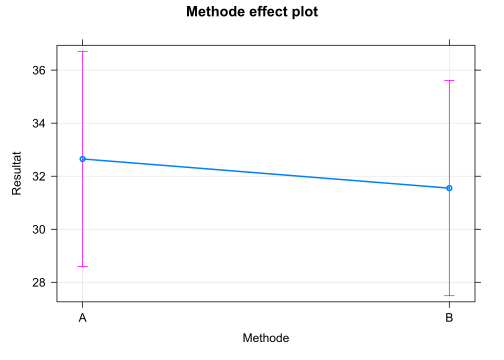
3.2.2 Höflichkeit und Grundfrequenz
library(tidyverse)## -- Attaching packages --------------------------------------- tidyverse 1.3.1 --## v ggplot2 3.3.5 v purrr 0.3.4
## v tibble 3.1.3 v dplyr 1.0.7
## v tidyr 1.1.3 v stringr 1.4.0
## v readr 2.0.1 v forcats 0.5.1## Warning: package 'readr' was built under R version 4.1.1## -- Conflicts ------------------------------------------ tidyverse_conflicts() --
## x dplyr::filter() masks stats::filter()
## x dplyr::lag() masks stats::lag()library(scales)##
## Attaching package: 'scales'## The following object is masked from 'package:purrr':
##
## discard## The following object is masked from 'package:readr':
##
## col_factor# detach("package:rlang", unload=TRUE)Datensatz von: Bodo Winter Thema: Politeness and Pitch (F0)
(cf. http://www.bodowinter.com/tutorial/bw_LME_tutorial1.pdf)
(cf. https://bodowinter.com/tutorial/bw_LME_tutorial.pdf)
Gliederung unserer quantitativen Analyse
1. Laden der Datei
2. Kennenlernen der Daten und Säubern
3. Hypothesen
4. Test und Ergebnisse
5. Schluss
3.2.2.1 Datei laden
# politeness <- read.csv("/cloud/project/data/politeness_data.csv")
politeness <- read.csv("data/politeness_data.csv")3.2.2.2 Kennenlernen der Daten und Säubern
Welche Variablen enthält die Datei?
head(politeness)## subject gender scenario attitude frequency
## 1 F1 F 1 pol 213.3
## 2 F1 F 1 inf 204.5
## 3 F1 F 2 pol 285.1
## 4 F1 F 2 inf 259.7
## 5 F1 F 3 pol 203.9
## 6 F1 F 3 inf 286.9glimpse(politeness)## Rows: 84
## Columns: 5
## $ subject <chr> "F1", "F1", "F1", "F1", "F1", "F1", "F1", "F1", "F1", "F1", ~
## $ gender <chr> "F", "F", "F", "F", "F", "F", "F", "F", "F", "F", "F", "F", ~
## $ scenario <int> 1, 1, 2, 2, 3, 3, 4, 4, 5, 5, 6, 6, 7, 7, 1, 1, 2, 2, 3, 3, ~
## $ attitude <chr> "pol", "inf", "pol", "inf", "pol", "inf", "pol", "inf", "pol~
## $ frequency <dbl> 213.3, 204.5, 285.1, 259.7, 203.9, 286.9, 250.8, 276.8, 231.~Am Experiment nahmen 6 Versuchspersonen teil (F1, …, M7). Von jeder Versuchsperson (subject) haben wir 14 Messpunkte (n = 14).
politeness %>%
count(subject)## subject n
## 1 F1 14
## 2 F2 14
## 3 F3 14
## 4 M3 14
## 5 M4 14
## 6 M7 14Versuchspersonen: je 3 sind weiblich bzw. männlich.
politeness %>%
count(subject, gender)## subject gender n
## 1 F1 F 14
## 2 F2 F 14
## 3 F3 F 14
## 4 M3 M 14
## 5 M4 M 14
## 6 M7 M 14Pro Verhaltensweise stehen uns 42 Messpunkte zur Verfügung, um unsere (unten folgende) Hypothese zu überprüfen.
politeness %>%
count(attitude)## attitude n
## 1 inf 42
## 2 pol 42Berechnen wir mal die Grundfrequenz!
politeness %>%
mean(frequency)## Warning in mean.default(., frequency): argument is not numeric or logical:
## returning NA## [1] NA“NA”: In unserer Datenreihe fehlt eine Frequenz. Wir entfernen diese Datenzeile, um die durchschnittliche Frequenz (mean) zu berechnen.
politeness %>%
drop_na(frequency) %>%
summarise(av_freq = mean(frequency))## av_freq
## 1 193.5819Wir haben gerade die Durchschnittsfrequenz für alle Versuchspersonen berechnet. Berechnen wir sie nun getrennt nach weiblichen und männlichen Versuchspersonen!
politeness %>%
drop_na(frequency) %>%
group_by(gender) %>%
summarise(av_freq = mean(frequency))## # A tibble: 2 x 2
## gender av_freq
## <chr> <dbl>
## 1 F 247.
## 2 M 139.Erwartungsgemäß ist der Durchschnittswert bei Frauen höher als bei Männern: Frauen haben meist eine höhere Stimme als Männer.
Ein Blick auf die Durchschnittsfrequenzen bei höflicher und informeller Sprechweise: In unserer Stichprobe mit 6 Versuchspersonen (je 14 Frequenzmessungen) zeigt sich ein Unterschied von etwa 18,2 Hz, und zwar 202,59 - 184,36.
politeness %>%
drop_na() %>%
group_by(attitude) %>%
summarise(avg_freq = mean(frequency),
sd_freq = sd(frequency))## # A tibble: 2 x 3
## attitude avg_freq sd_freq
## <chr> <dbl> <dbl>
## 1 inf 203. 66.9
## 2 pol 184. 63.6# politeness %>%
# drop_na %>%
# transmute(attitude, frequency) %>%
# mutate(attitude = str_replace(attitude, "pol", "1"),
# attitude = str_replace(attitude, "inf", "0")) %>%
# mutate(attitude = parse_number(attitude))3.2.2.3 Hypothesen
H0: Der durchschnittliche Grundfrequenzverlauf (F0) bei höflichem oder informellem Sprechverhalten (attitude) ist gleich.
H1: Der durchschnittliche Grundfrequenzverlauf (F0) bei höflichem Sprechverhalten unterscheidet sich vom informellen.
Nach unserem bisherigen Wissen erwarten wir, dass unsere Daten die Hypothese H1 bestätigen werden.
Das überprüfen wir zunächst mit einem t-Test, anschließend mit einer linearen Regression.
3.2.2.4 t-Test
Zunächst ein Blick auf die Durchschnittsfrequenzen bei höflicher und informeller Sprechweise. In unserer Stichprobe mit 6 Versuchspersonen (je 14 Frequenzmessungen) zeigt sich ein Unterschied von etwa 18,2 Hz.
Gemäß Hypothese H1 ist der Unterschied nicht zufällig entstanden, sondern kann auf die Gesamtpopulation deutscher Sprecher verallgemeinert werden.
Nicht so gemäß Hypothese H0: Der Mittelwertunterschied zwischen den Stichproben kann zufällig entstanden sein, denn wenn wir eine andere Stichprobe genommen hätten, wäre der Unterschied vielleicht gleich Null gewesen.
Mit statistischen Tests können wir diese beiden Hypothesen überprüfen. Einer davon ist der t-Test.
politeness %>%
drop_na() %>%
group_by(attitude) %>%
summarise(avg_freq = mean(frequency),
sd_freq = sd(frequency))## # A tibble: 2 x 3
## attitude avg_freq sd_freq
## <chr> <dbl> <dbl>
## 1 inf 203. 66.9
## 2 pol 184. 63.6Der t-Test bestätigt H1 nicht (p > 0,05):
t.test(frequency ~ attitude, data = politeness, paired = F, var.equal = T)##
## Two Sample t-test
##
## data: frequency by attitude
## t = 1.2718, df = 81, p-value = 0.2071
## alternative hypothesis: true difference in means between group inf and group pol is not equal to 0
## 95 percent confidence interval:
## -10.29058 46.75458
## sample estimates:
## mean in group inf mean in group pol
## 202.5881 184.3561pol = politeness$frequency[politeness$attitude == "pol"]
inf = politeness$frequency[politeness$attitude == "inf"]
t.test(pol, inf)##
## Welch Two Sample t-test
##
## data: pol and inf
## t = -1.2726, df = 80.938, p-value = 0.2068
## alternative hypothesis: true difference in means is not equal to 0
## 95 percent confidence interval:
## -46.73684 10.27285
## sample estimates:
## mean of x mean of y
## 184.3561 202.5881polite <- politeness %>%
select(attitude, frequency) %>%
filter(attitude == "pol") %>%
select(-attitude)
informal <- politeness %>%
select(attitude, frequency) %>%
filter(attitude == "inf") %>%
select(-attitude)
t.test(polite, informal)##
## Welch Two Sample t-test
##
## data: polite and informal
## t = -1.2726, df = 80.938, p-value = 0.2068
## alternative hypothesis: true difference in means is not equal to 0
## 95 percent confidence interval:
## -46.73684 10.27285
## sample estimates:
## mean of x mean of y
## 184.3561 202.58813.2.2.5 Lineare Regression
Die lineare Regression hat den großen Vorteil, dass man mehr als eine unabhängige Variable (Prädiktor) verwenden kann, um die Hypothese zu testen. Wir wählen Geschlecht (gender) und Sprechverhalten (attitude) als unabhängige Variablen, der Grundfrequenzverlauf (frequency) ist die abhängige Variable.
politeness %>%
drop_na %>%
lm(frequency ~ attitude + gender, data = .) %>%
summary()##
## Call:
## lm(formula = frequency ~ attitude + gender, data = .)
##
## Residuals:
## Min 1Q Median 3Q Max
## -82.409 -26.561 -4.262 24.690 100.140
##
## Coefficients:
## Estimate Std. Error t value Pr(>|t|)
## (Intercept) 256.762 6.756 38.006 <2e-16 ***
## attitudepol -19.553 7.833 -2.496 0.0146 *
## genderM -108.349 7.833 -13.832 <2e-16 ***
## ---
## Signif. codes: 0 '***' 0.001 '**' 0.01 '*' 0.05 '.' 0.1 ' ' 1
##
## Residual standard error: 35.68 on 80 degrees of freedom
## Multiple R-squared: 0.7109, Adjusted R-squared: 0.7037
## F-statistic: 98.38 on 2 and 80 DF, p-value: < 2.2e-16Die lineare Regression bestätigt die Hypothese H1: F(2;80 = 98,38; p < 0,001). Die Versuchspersonen sprechen demnach in einer anderen Tonlage, wenn sie höflich sprechen, und zwar um ca. 19,5 Hz tiefer als wenn sie informell sprechen (p = 0,0146). Außerdem bestätigt die lineare Regression (erwartungsgemäß) auch, dass die männlichen Versuchspersonen mit einer tieferen Stimme sprechen als die weiblichen, und zwar um durchschnittlich 108 Hz. Der R^2-Wert beträgt 0,71 (d.h. etwa 71%). Das bedeutet, dass mit dem Regressionsergebnis ca. 71% der Variabilität unserer Daten erklärt wird.
politeness %>%
ggplot(aes(attitude, frequency, group = attitude, fill = attitude)) +
geom_boxplot() +
facet_wrap(~ gender) +
geom_hline(yintercept = c(202.5), lty = 3) +
geom_hline(yintercept = c(184.3), lty = 2) +
geom_jitter(width = 0.2)## Warning: Removed 1 rows containing non-finite values (stat_boxplot).## Warning: Removed 1 rows containing missing values (geom_point).m <- lm(frequency ~ attitude*gender, data = politeness)
library(effects)## Loading required package: carData## lattice theme set by effectsTheme()
## See ?effectsTheme for details.allEffects(m)## model: frequency ~ attitude * gender
##
## attitude*gender effect
## gender
## attitude F M
## inf 260.6857 144.4905
## pol 233.2857 132.9800plot(allEffects(m), multiline=TRUE, grid=TRUE, rug=FALSE, as.table=TRUE)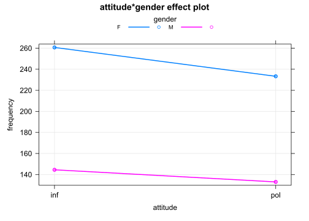
plot of chunk unnamed-chunk-1
library(parameters)## Registered S3 methods overwritten by 'parameters':
## method from
## as.double.parameters_kurtosis datawizard
## as.double.parameters_skewness datawizard
## as.double.parameters_smoothness datawizard
## as.numeric.parameters_kurtosis datawizard
## as.numeric.parameters_skewness datawizard
## as.numeric.parameters_smoothness datawizard
## print.parameters_distribution datawizard
## print.parameters_kurtosis datawizard
## print.parameters_skewness datawizard
## summary.parameters_kurtosis datawizard
## summary.parameters_skewness datawizardlibrary(see)## Registered S3 method overwritten by 'see':
## method from
## plot.visualisation_recipe datawizardp1 = plot(parameters(m)) +
ggplot2::labs(title = "A Dot-and-Whisker Plot")
p1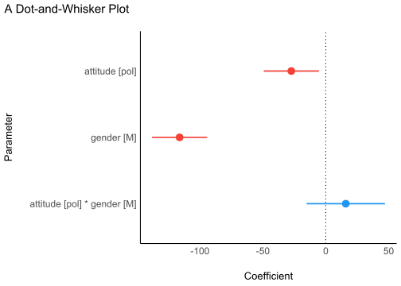
library(performance)
check <- check_normality(m)## OK: residuals appear as normally distributed (p = 0.396).## Warning: Non-normality of residuals detected (p = 0.016).
p2 = plot(check, type = "qq")
p2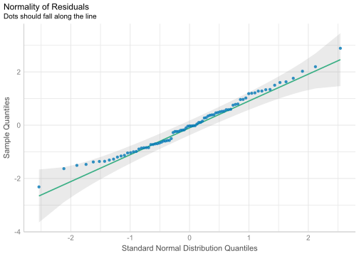
library(performance)
check <- check_normality(m, effects = "fixed")## OK: residuals appear as normally distributed (p = 0.396).## Warning: Non-normality of residuals detected (p = 0.016).
p2a = plot(check, type = "pp")
p2a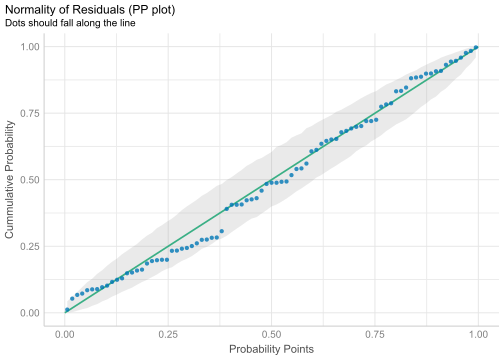
library(effectsize)
library(see)
m <- aov(frequency ~ attitude*gender, data = politeness)
p3 = plot(omega_squared(m))
p3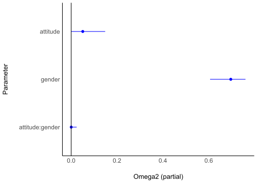
p4 = ggplot(politeness, aes(x = attitude, y = frequency, color = gender)) +
geom_point2() +
theme_modern()
p4## Warning: Removed 1 rows containing missing values (geom_point).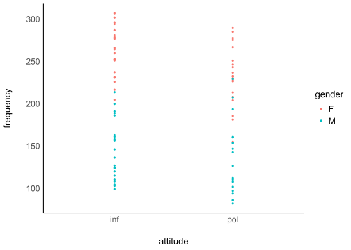
p4 = ggplot(politeness,
aes(x = attitude, y = frequency, fill = gender)) +
geom_violin() +
theme_modern(axis.text.angle = 45) +
scale_fill_material_d(palette = "ice")
p4## Warning: Removed 1 rows containing non-finite values (stat_ydensity).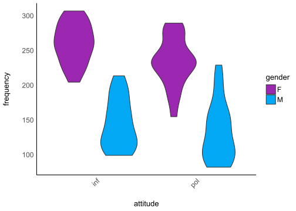
p5 = ggplot(politeness,
aes(x = attitude, y = frequency, fill = gender)) +
geom_violindot(fill_dots = "black") +
geom_jitter(width = 0.05) +
theme_modern() +
scale_fill_material_d()
p5## Warning: Removed 1 rows containing non-finite values (stat_ydensity).## Warning: Removed 1 rows containing non-finite values (stat_bindot).## Warning: Removed 1 rows containing missing values (geom_point).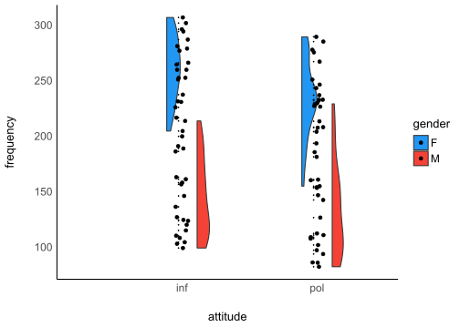
plots(p1,p2,p3,p4,
n_columns = 2,
tags = paste0("B", 1:4))## Warning: Removed 1 rows containing non-finite values (stat_ydensity).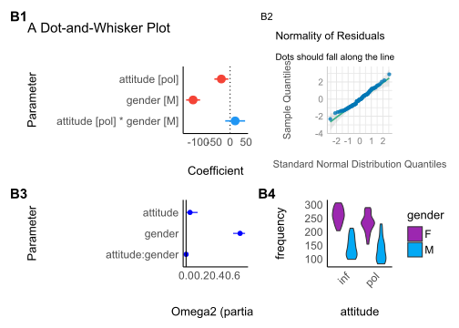
library(bayestestR)
library(rstanarm)## Loading required package: Rcpp## This is rstanarm version 2.21.1## - See https://mc-stan.org/rstanarm/articles/priors for changes to default priors!## - Default priors may change, so it's safest to specify priors, even if equivalent to the defaults.## - For execution on a local, multicore CPU with excess RAM we recommend calling## options(mc.cores = parallel::detectCores())##
## Attaching package: 'rstanarm'## The following object is masked from 'package:performance':
##
## pp_check## The following object is masked from 'package:parameters':
##
## compare_modelslibrary(see)
set.seed(123)
m <- stan_glm(frequency ~ attitude*gender, data = politeness, refresh = 0)
result <- hdi(m, ci = c(0.5, 0.75, 0.89, 0.95))
plot(result)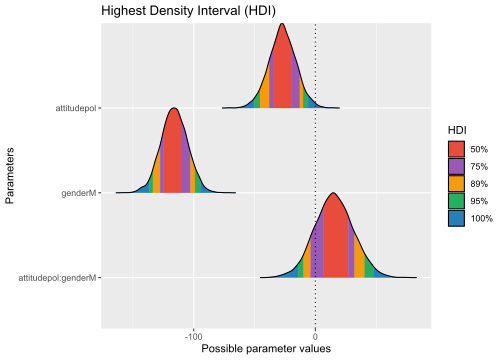
3.2.2.6 Schluss
Die Regressionsanalyse hat H1 bestätigt, d.h. die Grundfrequenz beim höflichen Sprechen unterscheidet sich vom informellen Sprechen. Beim höflichen Sprechen sprachen die Versuchspersonen mit einer durchschnittlich 19,5 Hz tieferen Stimme (bei den weiblichen Versuchspersonen ca. 27 Hz, bei den männlichen mehr als 11 Hz).
3.2.2.7 Lineare Regression
Politeness data (B. Winter tutorial)
Programme laden
library(tidyverse)## -- Attaching packages --------------------------------------- tidyverse 1.3.1 --## v ggplot2 3.3.5 v purrr 0.3.4
## v tibble 3.1.3 v dplyr 1.0.7
## v tidyr 1.1.3 v stringr 1.4.0
## v readr 2.0.1 v forcats 0.5.1## Warning: package 'readr' was built under R version 4.1.1## -- Conflicts ------------------------------------------ tidyverse_conflicts() --
## x dplyr::filter() masks stats::filter()
## x dplyr::lag() masks stats::lag()Datei laden
# LOAD
rm(list=ls(all=TRUE)) # clear memory
polite <- read.csv("data/politeness_data.csv", dec=".")Ansicht der Datenlage
head(polite)## subject gender scenario attitude frequency
## 1 F1 F 1 pol 213.3
## 2 F1 F 1 inf 204.5
## 3 F1 F 2 pol 285.1
## 4 F1 F 2 inf 259.7
## 5 F1 F 3 pol 203.9
## 6 F1 F 3 inf 286.9Variablen festlegen
polite$frequency = as.numeric(polite$frequency)
polite$scenario = as.factor(polite$scenario)
polite$subject = as.factor(polite$subject)
polite$gender = as.factor(polite$gender)
polite$attitude = as.factor(polite$attitude)Kontraste für den statistischen Test setzen
# In this session we use contr. sum contrasts
options(contrasts=c('contr.sum', 'contr.poly'))
options("contrasts")## $contrasts
## [1] "contr.sum" "contr.poly"Kontraste zurücksetzen
# To reset default settings run:
options(contrasts=c('contr.treatment', 'contr.poly'))
# (all afex functions should be unaffected by this)
# # Setting contrasts of chosen variables only
# contrasts(polite$attitude) <- contr.treatment(2, base = 1)plot of chunk unnamed-chunk-1
boxplot(frequency ~ attitude*gender,
col=c("red","green"), data = polite)Bild speichern
# 1. Open jpeg file
jpeg("pictures/politeness_boxplot.jpg",
width = 840, height = 535)
# 2. Create the plot
boxplot(frequency ~ attitude*gender,
col=c("red","green"), data = polite)
# 3. Close the file
dev.off()## svg
## 2# Open a pdf file
pdf("pictures/politeness_boxplot.pdf")
# 2. Create a plot
boxplot(frequency ~ attitude*gender,
col=c("red","green"), data = polite)
# Close the pdf file
dev.off() ## svg
## 2# Inspect relationships between pairs of variables
# library(MASS)Inspect relationships between pairs of variables
library(psych)##
## Attaching package: 'psych'## The following objects are masked from 'package:ggplot2':
##
## %+%, alphapairs.panels(polite[c(2,4,5)])Ordinary Least Squares Regression (OLS)
# model 1
m <- lm(frequency ~ gender + attitude + subject + scenario, data = polite)
summary(m)##
## Call:
## lm(formula = frequency ~ gender + attitude + subject + scenario,
## data = polite)
##
## Residuals:
## Min 1Q Median 3Q Max
## -53.673 -16.686 1.039 12.027 86.630
##
## Coefficients: (1 not defined because of singularities)
## Estimate Std. Error t value Pr(>|t|)
## (Intercept) 225.150 10.020 22.470 < 2e-16 ***
## genderM -129.857 9.606 -13.518 < 2e-16 ***
## attitudepol -19.794 5.585 -3.544 0.000707 ***
## subjectF2 26.150 9.606 2.722 0.008179 **
## subjectF3 18.700 9.606 1.947 0.055592 .
## subjectM3 66.800 9.606 6.954 1.52e-09 ***
## subjectM4 41.854 9.807 4.268 6.09e-05 ***
## subjectM7 NA NA NA NA
## scenario2 25.017 10.376 2.411 0.018537 *
## scenario3 31.025 10.376 2.990 0.003847 **
## scenario4 42.508 10.376 4.097 0.000111 ***
## scenario5 14.408 10.376 1.389 0.169351
## scenario6 1.405 10.629 0.132 0.895227
## scenario7 3.117 10.376 0.300 0.764783
## ---
## Signif. codes: 0 '***' 0.001 '**' 0.01 '*' 0.05 '.' 0.1 ' ' 1
##
## Residual standard error: 25.42 on 70 degrees of freedom
## (1 observation deleted due to missingness)
## Multiple R-squared: 0.8716, Adjusted R-squared: 0.8496
## F-statistic: 39.61 on 12 and 70 DF, p-value: < 2.2e-16# model 2
m <- lm(frequency ~ gender + attitude, data=polite)
summary(m)##
## Call:
## lm(formula = frequency ~ gender + attitude, data = polite)
##
## Residuals:
## Min 1Q Median 3Q Max
## -82.409 -26.561 -4.262 24.690 100.140
##
## Coefficients:
## Estimate Std. Error t value Pr(>|t|)
## (Intercept) 256.762 6.756 38.006 <2e-16 ***
## genderM -108.349 7.833 -13.832 <2e-16 ***
## attitudepol -19.553 7.833 -2.496 0.0146 *
## ---
## Signif. codes: 0 '***' 0.001 '**' 0.01 '*' 0.05 '.' 0.1 ' ' 1
##
## Residual standard error: 35.68 on 80 degrees of freedom
## (1 observation deleted due to missingness)
## Multiple R-squared: 0.7109, Adjusted R-squared: 0.7037
## F-statistic: 98.38 on 2 and 80 DF, p-value: < 2.2e-16library(effects)## Loading required package: carData## lattice theme set by effectsTheme()
## See ?effectsTheme for details.allEffects(m)## model: frequency ~ gender + attitude
##
## gender effect
## gender
## F M
## 247.1035 138.7549
##
## attitude effect
## attitude
## inf pol
## 203.2408 183.6875plot(allEffects(m), multiline=TRUE, grid=TRUE, rug=FALSE, as.table=TRUE)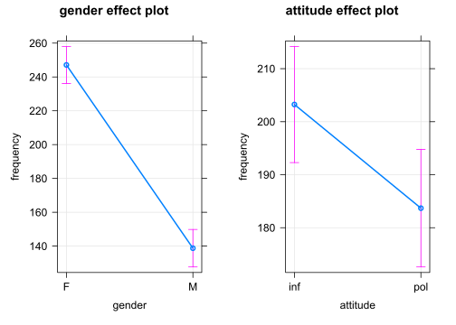
plot of chunk unnamed-chunk-1
# Save plot of the effects to disk
# 1. Open jpeg file
jpeg("pictures/politeness_lineplot.jpg",
width = 840, height = 535)
# 2. Create the plot
plot(allEffects(m), multiline=TRUE, grid=TRUE, rug=FALSE, as.table=TRUE)
# 3. Close the file
dev.off()## svg
## 2# model 3 (with interaction)
m <- lm(frequency ~ gender*attitude, data=polite)
summary(m)##
## Call:
## lm(formula = frequency ~ gender * attitude, data = polite)
##
## Residuals:
## Min 1Q Median 3Q Max
## -78.486 -27.383 -0.986 20.570 96.020
##
## Coefficients:
## Estimate Std. Error t value Pr(>|t|)
## (Intercept) 260.686 7.784 33.491 <2e-16 ***
## genderM -116.195 11.008 -10.556 <2e-16 ***
## attitudepol -27.400 11.008 -2.489 0.0149 *
## genderM:attitudepol 15.890 15.664 1.014 0.3135
## ---
## Signif. codes: 0 '***' 0.001 '**' 0.01 '*' 0.05 '.' 0.1 ' ' 1
##
## Residual standard error: 35.67 on 79 degrees of freedom
## (1 observation deleted due to missingness)
## Multiple R-squared: 0.7147, Adjusted R-squared: 0.7038
## F-statistic: 65.95 on 3 and 79 DF, p-value: < 2.2e-16library(effects)
allEffects(m)## model: frequency ~ gender * attitude
##
## gender*attitude effect
## attitude
## gender inf pol
## F 260.6857 233.2857
## M 144.4905 132.9800plot(allEffects(m), multiline=TRUE, grid=TRUE, rug=FALSE, as.table=TRUE)
plot of chunk unnamed-chunk-1
# Save plot of the effects to disk
# 1. Open jpeg file
jpeg("pictures/politeness_effects.jpg",
width = 840, height = 535)
# 2. Create the plot
plot(allEffects(m), multiline=TRUE, grid=TRUE, rug=FALSE, as.table=TRUE)
# 3. Close the file
dev.off()## svg
## 2# Open a pdf file
pdf("pictures/politeness_effects.pdf")
# 2. Create a plot
plot(allEffects(m), multiline=TRUE, grid=TRUE, rug=FALSE, as.table=TRUE)
# Close the pdf file
dev.off() ## svg
## 2# plot diagnostic diagrams
par(mfrow = c(3,2))
plot(m, which = 1) # variance of residuals vs. fitted values?
plot(m, which = 2) # normal distributed residuals?
plot(m, which = 3) # variance of residuals standardized
plot(m, which = 4) # Cook's distance (outliers / influencing data points?)
plot(m, which = 5) # Leverage vs. standardized variance of residuals
plot(m, which = 6) # Cook's distance vs. Leverage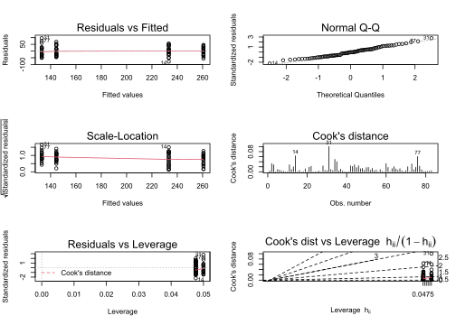
par(mfrow = c(1,1))plot of chunk unnamed-chunk-1
# Change of estimates if one datapoint is removed from the model
d <- dfbetas(m)
head(d) %>% as.data.frame %>% rmarkdown::paged_table()# plot the dfbetas (are there any outliers or data points with high influence?)
par(mfrow = c(1,3))
plot(d[,1], col = "orange")
plot(d[,2], col = "blue")
plot(d[,3], col = "purple")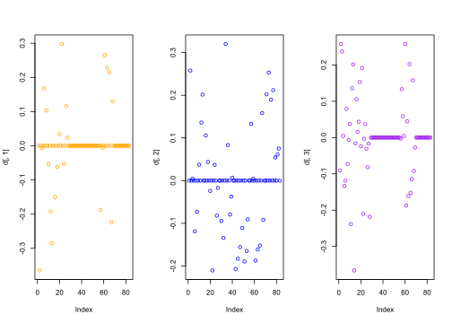
par(mfrow = c(1,1))plot of chunk unnamed-chunk-1
3.2.2.8 Regression mit gemischten Effekten
(Mixed effects Regression)
# The variables 'subject' and 'scenario' have been chosen as random effects
library(afex)# random intercepts model
m <- lmer(frequency ~ gender +
(1|subject) + (1|scenario),
REML=F, data=polite)
m0 <- m
summary(m)## Linear mixed model fit by maximum likelihood . t-tests use Satterthwaite's
## method [lmerModLmerTest]
## Formula: frequency ~ gender + (1 | subject) + (1 | scenario)
## Data: polite
##
## AIC BIC logLik deviance df.resid
## 816.7 828.8 -403.4 806.7 78
##
## Scaled residuals:
## Min 1Q Median 3Q Max
## -2.49969 -0.57100 -0.06373 0.60229 2.86559
##
## Random effects:
## Groups Name Variance Std.Dev.
## scenario (Intercept) 191.2 13.83
## subject (Intercept) 409.6 20.24
## Residual 751.9 27.42
## Number of obs: 83, groups: scenario, 7; subject, 6
##
## Fixed effects:
## Estimate Std. Error df t value Pr(>|t|)
## (Intercept) 246.986 13.481 7.676 18.321 1.3e-07 ***
## genderM -108.236 17.588 5.939 -6.154 0.000877 ***
## ---
## Signif. codes: 0 '***' 0.001 '**' 0.01 '*' 0.05 '.' 0.1 ' ' 1
##
## Correlation of Fixed Effects:
## (Intr)
## genderM -0.651m <- lmer(frequency ~ gender + attitude +
(1|subject) + (1|scenario),
REML=F, data=polite)
m1 <- m
summary(m)## Linear mixed model fit by maximum likelihood . t-tests use Satterthwaite's
## method [lmerModLmerTest]
## Formula: frequency ~ gender + attitude + (1 | subject) + (1 | scenario)
## Data: polite
##
## AIC BIC logLik deviance df.resid
## 807.1 821.6 -397.6 795.1 77
##
## Scaled residuals:
## Min 1Q Median 3Q Max
## -2.2958 -0.6456 -0.0776 0.5448 3.5121
##
## Random effects:
## Groups Name Variance Std.Dev.
## scenario (Intercept) 205.2 14.33
## subject (Intercept) 417.0 20.42
## Residual 637.4 25.25
## Number of obs: 83, groups: scenario, 7; subject, 6
##
## Fixed effects:
## Estimate Std. Error df t value Pr(>|t|)
## (Intercept) 256.847 13.827 8.500 18.576 3.53e-08 ***
## genderM -108.517 17.571 5.929 -6.176 0.000866 ***
## attitudepol -19.722 5.547 70.920 -3.555 0.000677 ***
## ---
## Signif. codes: 0 '***' 0.001 '**' 0.01 '*' 0.05 '.' 0.1 ' ' 1
##
## Correlation of Fixed Effects:
## (Intr) gendrM
## genderM -0.635
## attitudepol -0.201 0.004m <- lmer(frequency ~ gender*attitude +
(1|subject) + (1|scenario),
REML=F, data=polite)
m2 <- m
summary(m)## Linear mixed model fit by maximum likelihood . t-tests use Satterthwaite's
## method [lmerModLmerTest]
## Formula: frequency ~ gender * attitude + (1 | subject) + (1 | scenario)
## Data: polite
##
## AIC BIC logLik deviance df.resid
## 807.1 824.0 -396.6 793.1 76
##
## Scaled residuals:
## Min 1Q Median 3Q Max
## -2.1678 -0.5559 -0.0628 0.5103 3.3903
##
## Random effects:
## Groups Name Variance Std.Dev.
## scenario (Intercept) 205.0 14.32
## subject (Intercept) 418.8 20.47
## Residual 620.0 24.90
## Number of obs: 83, groups: scenario, 7; subject, 6
##
## Fixed effects:
## Estimate Std. Error df t value Pr(>|t|)
## (Intercept) 260.686 14.086 9.140 18.506 1.48e-08 ***
## genderM -116.195 18.392 7.094 -6.318 0.000376 ***
## attitudepol -27.400 7.684 70.881 -3.566 0.000655 ***
## genderM:attitudepol 15.568 10.943 70.925 1.423 0.159229
## ---
## Signif. codes: 0 '***' 0.001 '**' 0.01 '*' 0.05 '.' 0.1 ' ' 1
##
## Correlation of Fixed Effects:
## (Intr) gendrM atttdp
## genderM -0.653
## attitudepol -0.273 0.209
## gndrM:tttdp 0.192 -0.293 -0.702Vergleich der Modelle:
anova(m0,m1,m2)## Data: polite
## Models:
## m0: frequency ~ gender + (1 | subject) + (1 | scenario)
## m1: frequency ~ gender + attitude + (1 | subject) + (1 | scenario)
## m2: frequency ~ gender * attitude + (1 | subject) + (1 | scenario)
## npar AIC BIC logLik deviance Chisq Df Pr(>Chisq)
## m0 5 816.72 828.81 -403.36 806.72
## m1 6 807.10 821.61 -397.55 795.10 11.6178 1 0.0006532 ***
## m2 7 807.11 824.04 -396.55 793.11 1.9963 1 0.1576796
## ---
## Signif. codes: 0 '***' 0.001 '**' 0.01 '*' 0.05 '.' 0.1 ' ' 1# politeness affected pitch (χ2(1)=11.62, p=0.00065),
# lowering it by about 19.7 Hz ± 5.6 (standard errors)
# random slopes model
m <- lmer(frequency ~ gender +
(attitude + 1|subject) + (attitude + 1|scenario),
REML=F, data=polite)## boundary (singular) fit: see ?isSingularm00 <- m
summary(m)## Linear mixed model fit by maximum likelihood . t-tests use Satterthwaite's
## method [lmerModLmerTest]
## Formula: frequency ~ gender + (attitude + 1 | subject) + (attitude + 1 |
## scenario)
## Data: polite
##
## AIC BIC logLik deviance df.resid
## 819.6 841.4 -400.8 801.6 74
##
## Scaled residuals:
## Min 1Q Median 3Q Max
## -2.09487 -0.64641 -0.08678 0.60655 3.00531
##
## Random effects:
## Groups Name Variance Std.Dev. Corr
## scenario (Intercept) 231.844 15.226
## attitudepol 410.086 20.251 -0.40
## subject (Intercept) 378.484 19.455
## attitudepol 5.443 2.333 1.00
## Residual 628.656 25.073
## Number of obs: 83, groups: scenario, 7; subject, 6
##
## Fixed effects:
## Estimate Std. Error df t value Pr(>|t|)
## (Intercept) 253.370 13.437 7.714 18.856 9.9e-08 ***
## genderM -112.488 17.470 5.932 -6.439 0.000694 ***
## ---
## Signif. codes: 0 '***' 0.001 '**' 0.01 '*' 0.05 '.' 0.1 ' ' 1
##
## Correlation of Fixed Effects:
## (Intr)
## genderM -0.650
## optimizer (nloptwrap) convergence code: 0 (OK)
## boundary (singular) fit: see ?isSingularm <- lmer(frequency ~ gender + attitude +
(attitude + 1|subject) + (attitude + 1|scenario),
REML=F, data=polite)## boundary (singular) fit: see ?isSingularm01 <- m
summary(m)## Linear mixed model fit by maximum likelihood . t-tests use Satterthwaite's
## method [lmerModLmerTest]
## Formula:
## frequency ~ gender + attitude + (attitude + 1 | subject) + (attitude +
## 1 | scenario)
## Data: polite
##
## AIC BIC logLik deviance df.resid
## 814.9 839.1 -397.4 794.9 73
##
## Scaled residuals:
## Min 1Q Median 3Q Max
## -2.1946 -0.6690 -0.0789 0.5256 3.4251
##
## Random effects:
## Groups Name Variance Std.Dev. Corr
## scenario (Intercept) 182.083 13.494
## attitudepol 31.244 5.590 0.22
## subject (Intercept) 392.344 19.808
## attitudepol 1.714 1.309 1.00
## Residual 627.890 25.058
## Number of obs: 83, groups: scenario, 7; subject, 6
##
## Fixed effects:
## Estimate Std. Error df t value Pr(>|t|)
## (Intercept) 257.991 13.528 7.600 19.071 1.08e-07 ***
## genderM -110.806 17.510 5.936 -6.328 0.000759 ***
## attitudepol -19.747 5.922 7.062 -3.335 0.012354 *
## ---
## Signif. codes: 0 '***' 0.001 '**' 0.01 '*' 0.05 '.' 0.1 ' ' 1
##
## Correlation of Fixed Effects:
## (Intr) gendrM
## genderM -0.647
## attitudepol -0.105 0.003
## optimizer (nloptwrap) convergence code: 0 (OK)
## boundary (singular) fit: see ?isSingularm <- lmer(frequency ~ gender + attitude +
(attitude + 1|subject),
REML=F, data=polite)## boundary (singular) fit: see ?isSingularlibrary(effects)
allEffects(m)## model: frequency ~ gender + attitude
##
## gender effect
## gender
## F M
## 247.9156 138.0861
##
## attitude effect
## attitude
## inf pol
## 203.2497 183.8414plot(allEffects(m), multiline=TRUE, grid=TRUE, rug=FALSE, as.table=TRUE)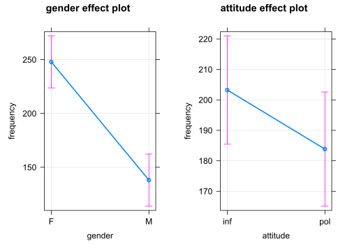
plot of chunk unnamed-chunk-1
m <- lmer(frequency ~ gender + attitude +
(attitude + 1|scenario),
REML=F, data=polite)## boundary (singular) fit: see ?isSingularlibrary(effects)
allEffects(m)## model: frequency ~ gender + attitude
##
## gender effect
## gender
## F M
## 247.1051 138.4961
##
## attitude effect
## attitude
## inf pol
## 203.2424 183.4286plot(allEffects(m), multiline=TRUE, grid=TRUE, rug=FALSE, as.table=TRUE)

plot of chunk unnamed-chunk-1
m <- lmer(frequency ~ gender*attitude +
(attitude + 1|subject) + (attitude + 1|scenario),
REML=F, data=polite)## boundary (singular) fit: see ?isSingularm02 <- m
summary(m)## Linear mixed model fit by maximum likelihood . t-tests use Satterthwaite's
## method [lmerModLmerTest]
## Formula:
## frequency ~ gender * attitude + (attitude + 1 | subject) + (attitude +
## 1 | scenario)
## Data: polite
##
## AIC BIC logLik deviance df.resid
## 814.9 841.5 -396.4 792.9 72
##
## Scaled residuals:
## Min 1Q Median 3Q Max
## -2.0680 -0.5620 -0.0360 0.4953 3.3021
##
## Random effects:
## Groups Name Variance Std.Dev. Corr
## scenario (Intercept) 185.5388 13.6213
## attitudepol 36.4691 6.0390 0.14
## subject (Intercept) 400.9123 20.0228
## attitudepol 0.8331 0.9127 1.00
## Residual 609.1686 24.6813
## Number of obs: 83, groups: scenario, 7; subject, 6
##
## Fixed effects:
## Estimate Std. Error df t value Pr(>|t|)
## (Intercept) 260.686 13.753 7.594 18.955 1.14e-07 ***
## genderM -116.195 18.036 6.060 -6.442 0.000636 ***
## attitudepol -27.400 7.969 21.583 -3.438 0.002394 **
## genderM:attitudepol 15.516 10.874 58.553 1.427 0.158919
## ---
## Signif. codes: 0 '***' 0.001 '**' 0.01 '*' 0.05 '.' 0.1 ' ' 1
##
## Correlation of Fixed Effects:
## (Intr) gendrM atttdp
## genderM -0.656
## attitudepol -0.194 0.159
## gndrM:tttdp 0.153 -0.234 -0.673
## optimizer (nloptwrap) convergence code: 0 (OK)
## boundary (singular) fit: see ?isSingularVergleich der Modelle:
anova(m00,m01,m02)## Data: polite
## Models:
## m00: frequency ~ gender + (attitude + 1 | subject) + (attitude + 1 | scenario)
## m01: frequency ~ gender + attitude + (attitude + 1 | subject) + (attitude + 1 | scenario)
## m02: frequency ~ gender * attitude + (attitude + 1 | subject) + (attitude + 1 | scenario)
## npar AIC BIC logLik deviance Chisq Df Pr(>Chisq)
## m00 9 819.61 841.37 -400.80 801.61
## m01 10 814.90 839.09 -397.45 794.90 6.7082 1 0.009597 **
## m02 11 814.89 841.50 -396.45 792.89 2.0023 1 0.157060
## ---
## Signif. codes: 0 '***' 0.001 '**' 0.01 '*' 0.05 '.' 0.1 ' ' 1library(lmerTest)
s <- step(m)s## Backward reduced random-effect table:
##
## Eliminated npar logLik AIC LRT Df
## <none> 11 -396.45 814.89
## attitude in (attitude + 1 | subject) 1 9 -396.46 810.92 0.0279 2
## attitude in (attitude + 1 | scenario) 2 7 -396.55 807.11 0.1827 2
## (1 | subject) 0 6 -410.45 832.90 27.7921 1
## (1 | scenario) 0 6 -402.35 816.71 11.6007 1
## Pr(>Chisq)
## <none>
## attitude in (attitude + 1 | subject) 0.9861435
## attitude in (attitude + 1 | scenario) 0.9126813
## (1 | subject) 1.351e-07 ***
## (1 | scenario) 0.0006593 ***
## ---
## Signif. codes: 0 '***' 0.001 '**' 0.01 '*' 0.05 '.' 0.1 ' ' 1
##
## Backward reduced fixed-effect table:
## Degrees of freedom method: Satterthwaite
##
## Eliminated Sum Sq Mean Sq NumDF DenDF F value Pr(>F)
## gender:attitude 1 1254.8 1254.8 1 70.925 2.0239 0.1592288
## gender 0 24310.7 24310.7 1 5.929 38.1404 0.0008664 ***
## attitude 0 8057.2 8057.2 1 70.920 12.6408 0.0006768 ***
## ---
## Signif. codes: 0 '***' 0.001 '**' 0.01 '*' 0.05 '.' 0.1 ' ' 1
##
## Model found:
## frequency ~ gender + attitude + (1 | subject) + (1 | scenario)library(LMERConvenienceFunctions)
m <- lmer(frequency ~ gender + attitude +
(attitude + 1|subject) + (attitude + 1|scenario),
REML=F, data=polite)## boundary (singular) fit: see ?isSingularm01 <- m
summary(m)## Linear mixed model fit by maximum likelihood . t-tests use Satterthwaite's
## method [lmerModLmerTest]
## Formula:
## frequency ~ gender + attitude + (attitude + 1 | subject) + (attitude +
## 1 | scenario)
## Data: polite
##
## AIC BIC logLik deviance df.resid
## 814.9 839.1 -397.4 794.9 73
##
## Scaled residuals:
## Min 1Q Median 3Q Max
## -2.1946 -0.6690 -0.0789 0.5256 3.4251
##
## Random effects:
## Groups Name Variance Std.Dev. Corr
## scenario (Intercept) 182.083 13.494
## attitudepol 31.244 5.590 0.22
## subject (Intercept) 392.344 19.808
## attitudepol 1.714 1.309 1.00
## Residual 627.890 25.058
## Number of obs: 83, groups: scenario, 7; subject, 6
##
## Fixed effects:
## Estimate Std. Error df t value Pr(>|t|)
## (Intercept) 257.991 13.528 7.600 19.071 1.08e-07 ***
## genderM -110.806 17.510 5.936 -6.328 0.000759 ***
## attitudepol -19.747 5.922 7.062 -3.335 0.012354 *
## ---
## Signif. codes: 0 '***' 0.001 '**' 0.01 '*' 0.05 '.' 0.1 ' ' 1
##
## Correlation of Fixed Effects:
## (Intr) gendrM
## genderM -0.647
## attitudepol -0.105 0.003
## optimizer (nloptwrap) convergence code: 0 (OK)
## boundary (singular) fit: see ?isSingular# Check model asumptions
mcp.fnc(m)plot of chunk unnamed-chunk-1
fligner.test(frequency ~ attitude, polite)##
## Fligner-Killeen test of homogeneity of variances
##
## data: frequency by attitude
## Fligner-Killeen:med chi-squared = 0.21737, df = 1, p-value = 0.6411fligner.test(frequency ~ gender, polite)##
## Fligner-Killeen test of homogeneity of variances
##
## data: frequency by gender
## Fligner-Killeen:med chi-squared = 0.7388, df = 1, p-value = 0.39shapiro.test(polite$frequency)##
## Shapiro-Wilk normality test
##
## data: polite$frequency
## W = 0.94456, p-value = 0.001347which(is.na(polite$frequency)) ## [1] 39# delete NA from data frame in row 39
polite1 <- polite[-39,]
# Remove outliers
freqout <- romr.fnc(m, polite1, trim=2.5)## n.removed = 1
## percent.removed = 1.204819freqout$n.removed## [1] 1freqout$percent.removed## [1] 1.204819freqout <- freqout$data
attach(freqout)# update model
m <- lmer(frequency ~ gender + attitude +
(attitude + 1|subject) + (attitude + 1|scenario),
REML=F, data=freqout)## boundary (singular) fit: see ?isSingularm01 <- m
summary(m)## Linear mixed model fit by maximum likelihood . t-tests use Satterthwaite's
## method [lmerModLmerTest]
## Formula:
## frequency ~ gender + attitude + (attitude + 1 | subject) + (attitude +
## 1 | scenario)
## Data: freqout
##
## AIC BIC logLik deviance df.resid
## 790.9 815.0 -385.5 770.9 72
##
## Scaled residuals:
## Min 1Q Median 3Q Max
## -2.49611 -0.56183 -0.04681 0.55860 2.73929
##
## Random effects:
## Groups Name Variance Std.Dev. Corr
## scenario (Intercept) 205.28012 14.3276
## attitudepol 0.01369 0.1170 1.00
## subject (Intercept) 410.89205 20.2705
## attitudepol 0.11135 0.3337 1.00
## Residual 518.42987 22.7691
## Number of obs: 82, groups: scenario, 7; subject, 6
##
## Fixed effects:
## Estimate Std. Error df t value Pr(>|t|)
## (Intercept) 258.411 13.640 7.931 18.946 6.91e-08 ***
## genderM -111.647 17.423 5.936 -6.408 0.000711 ***
## attitudepol -22.391 5.045 68.398 -4.438 3.39e-05 ***
## ---
## Signif. codes: 0 '***' 0.001 '**' 0.01 '*' 0.05 '.' 0.1 ' ' 1
##
## Correlation of Fixed Effects:
## (Intr) gendrM
## genderM -0.639
## attitudepol -0.164 0.008
## optimizer (nloptwrap) convergence code: 0 (OK)
## boundary (singular) fit: see ?isSingular# Re-Check model asumptions
mcp.fnc(m)plot of chunk unnamed-chunk-1
fligner.test(frequency ~ attitude, freqout)##
## Fligner-Killeen test of homogeneity of variances
##
## data: frequency by attitude
## Fligner-Killeen:med chi-squared = 0.34994, df = 1, p-value = 0.5541fligner.test(frequency ~ gender, freqout)##
## Fligner-Killeen test of homogeneity of variances
##
## data: frequency by gender
## Fligner-Killeen:med chi-squared = 0.25815, df = 1, p-value = 0.6114shapiro.test(freqout$frequency)##
## Shapiro-Wilk normality test
##
## data: freqout$frequency
## W = 0.9441, p-value = 0.001373